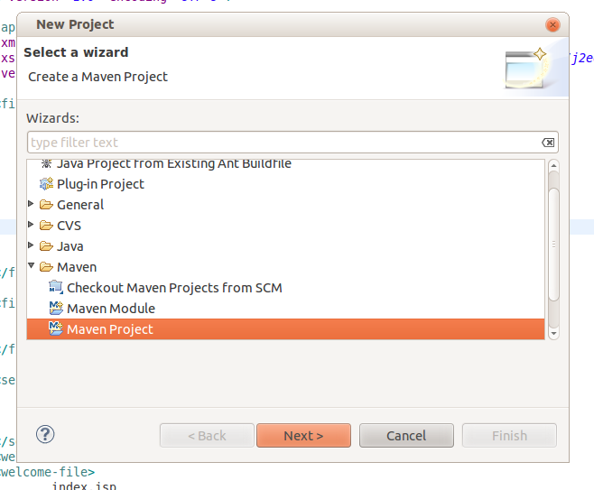
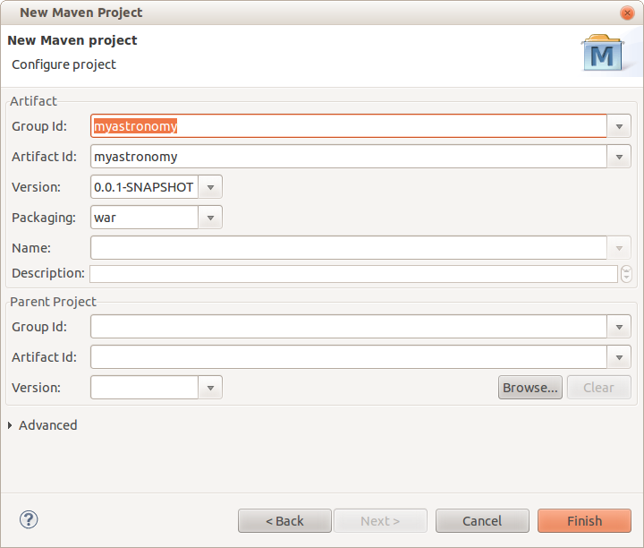

So open eclipse and create a new maven project

Then choose to create a "simple project" and on the next screen use group and artefact Id of "myastronomy", and select packaging of "war":

Click "Finish" to generate the project. Now we need to edit the generated pom.xml file to include milton and to integrate the jetty plugin which we'll use as the embedded web server. So open the pom.xml as "XML file" (if you just open normally you'll get the UI which is difficult to copy and paste).
First we'll add the dependencies which will include milton, so paste this just before the closing project tag:
<repositories>
<repository>
<id>ettrema-repo
</id>
<url>http://milton.io/maven/
</url>
</repository>
</repositories>
Then insert the jetty plugin:
<build>
<plugins>
<plugin>
<groupId>org.mortbay.jetty</groupId>
<artifactId>maven-jetty-plugin</artifactId>
<configuration>
<contextPath>/</contextPath>
<connectors>
<connector implementation="org.mortbay.jetty.nio.SelectChannelConnector">
<!--<port>8085</port>-->
<port>8080</port>
<maxIdleTime>60000</maxIdleTime>
</connector>
</connectors>
<stopKey>stop</stopKey>
<stopPort>8089</stopPort>
</configuration>
</plugin>
</plugins>
</build>
And now add the milton version, and character formatting (its just good practise). You can check the latest milton version on the downloads page:
<properties>
<project.build.sourceEncoding>UTF-8</project.build.sourceEncoding>
<milton.version>2.4.2.2</milton.version>
</properties>
Now we can add a dependency on the milton runtime. We'll use the community edition which doesnt require registration. We also need to add a slf4 adapter:
<dependencies>
<dependency>
<groupId>io.milton</groupId>
<artifactId>milton-server-ce</artifactId>
<version>${milton.version}</version>
</dependency>
<dependency>
<groupId>org.slf4j</groupId>
<artifactId>slf4j-log4j12</artifactId>
<version>1.6.1</version>
</dependency>
</dependencies>
And the final result should look like this
IMPORTANT: Check your project preferences and ensure you're using JDK16 or higher (this example uses interface annotations that cause an error on 1.5)